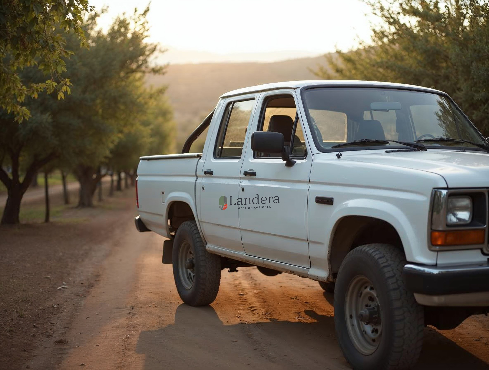

Operación: vehículos, maquinaria e infraestructura
Cuatro soportes, cuatro respuestas
El soporte decide la versión: vehículo logotipo horizontal en proporción; maquinaria isotipo; infraestructura franja e identificación; container y caseta paños compuestos, no un logo centrado.
Vehículo
Horizontal, Gestión Agrícola, en vinilo de corte a dos tintas, 2/3 del ancho del paño de la puerta y a la altura de la manilla. Nunca en capó, parabrisas ni portalón.
Maquinaria
Isotipo a una tinta, 25 cm, en el paño plano de la cabina. Verde sobre máquina clara, crema sobre oscura.
Infraestructura
Bodegas y estanques: franja al canto e identificación en Bold («Bodega 2»). El logotipo, sólo en el acceso (lámina 35).
Container y caseta
Se trabaja el paño: franja en un extremo, placa junto a la puerta, nombre del cuartel. Nunca el logotipo centrado en la cara larga.

Camioneta · vinilo de corte a dos tintasHorizontal, Gestión Agrícola, 2/3 del paño de la puerta, a la altura de la manilla
Maquinaria · isotipo 25 cmUna tinta crema en la cabina; nunca el logotipo completo

Caseta · paño compuestoPlaca junto a la puerta; el muro queda limpio

BodegaFranja + identificación sobre el portón; sin logotipo

EstanqueIdentificación en Bold e isotipo verde a 1/5 del diámetro

Container · paño compuestoFranja en el extremo, identificación y logotipo pequeño en el tercio; nunca centrado en la cara larga
Invariables
Variables
⚠ Soportes de referencia generados; la marca se montó por código — se mide sobre el vehículo o la obra real
36 · Terreno
Landera · Manual de marca